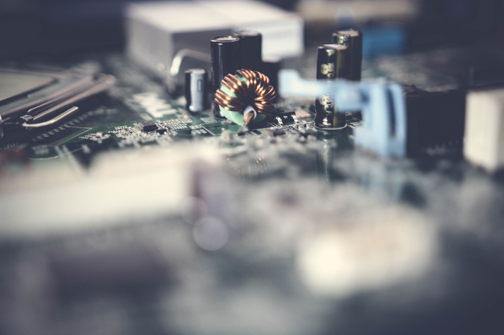

SKC, 동박·반도체 소재 호조로 2분기 적자폭 대폭 축소

SKC가 2026년 2분기 실적에서 전 분기 대비 뚜렷한 개선세를 보였다. 동박 자회사인 SK넥실리스와 반도체 소재 부문의 매출 성장이 적자 폭을 눈에 띄게 줄이는 데 핵심 역할을 했다. 업계는 이번 실적을 SKC의 사업 구조 재편 효과가 가시화되기 시작한 신호탄으로 해석하고 있다.
동박 부문에서는 AI 데이터센터용 고성능 서버 기판 소재 수요가 예상을 웃돌았다. 기존에는 전기차 배터리용 음극 집전체로 쓰이던 동박이, AI 서버용 고다층 기판(HDI·ABF 기판)의 핵심 소재로 수요처가 빠르게 다변화되고 있다. SK넥실리스는 AI 서버 기판용 초박 동박(6마이크로미터 이하) 공급을 확대하며 시장 선점에 나서고 있다.
반도체 소재 부문에서는 CMP(화학적 기계 연마) 슬러리와 고분자 패키징 필름의 매출이 전 분기 대비 각각 두 자릿수 성장률을 기록했다. HBM(고대역폭 메모리) 생산 공정에 필수적인 CMP 슬러리 수요가 SK하이닉스, 삼성전자의 증산 기조에 따라 꾸준히 늘고 있으며, 이는 SKC 반도체 소재 사업의 안정적인 수익 기반이 되고 있다.
SKC 관계자는 "동박과 반도체 소재 두 축의 동반 성장이 전사 실적 개선을 이끌고 있다"며 "특히 AI 반도체 공급망 내 당사 소재의 채용 확대가 하반기에도 이어질 것으로 기대한다"고 말했다. 회사는 하반기 흑자 전환을 목표로 수익성 높은 제품 비중 확대에 집중하고 있다.
글로벌 동박 시장은 2026년 약 65억 달러 규모에서 2030년 120억 달러로 성장할 것으로 예측된다. 특히 AI 인프라 투자 확대에 따른 데이터센터 서버 기판 수요가 전체 시장 성장을 견인하는 새로운 축으로 부상하고 있다. SK넥실리스 외에도 롯데에너지머티리얼즈, 일진머티리얼즈 등 국내 동박 기업들이 이 시장을 주목하고 있다.
한편 전기차 배터리용 동박 수요는 전기차 보급 속도 조절 우려로 일시적으로 성장세가 둔화됐으나, 중장기적으로는 회복이 예상된다. 업계에서는 AI 서버용 동박이 단기 실적 부진을 방어하는 '구원투수' 역할을 하고 있다는 평가가 나온다.
반도체 패키징 소재 시장도 주목받고 있다. AI 칩 패키징에 쓰이는 ABF(Ajinomoto Build-up Film)와 유리 기판, 봉지재(EMC) 등의 수요가 급증하면서 관련 소재 기업들의 수주 잔고가 빠르게 쌓이고 있다. SKC는 이 부문에서도 경쟁력 있는 포트폴리오를 구축 중이다.
증권업계는 SKC의 하반기 실적 개선 가시성이 높아졌다고 평가하고 있다. 한 증권사 리포트는 "동박 가격 회복과 AI 서버 기판 수요 강세가 맞물리면서 3분기 흑자 전환이 유력하다"며 목표주가를 상향했다. 외국인 투자자들도 7월 들어 SKC 주식을 순매수하는 흐름을 보이고 있다.
SKC는 중장기적으로 반도체 소재와 친환경 소재를 양대 성장 축으로 삼는 사업 구조 재편을 추진하고 있다. 비핵심 사업 정리와 동시에 첨단 소재 R&D 투자를 확대하고 있으며, 글로벌 소재 기업들과의 기술 협력도 적극 모색하고 있다.
국내 소부장 업계 전반에서 AI 반도체 수요가 실적 개선의 든든한 버팀목이 되고 있는 가운데, SKC의 이번 실적은 소재 기업들이 단순한 원자재 공급자를 넘어 첨단 기술 파트너로 위상을 높이고 있음을 보여주는 사례로 평가된다.
하반기 주요 변수로는 AI 반도체 수요의 지속 여부, 동박 가격 추이, 글로벌 거시경제 불확실성 등이 꼽힌다. 업계에서는 젠슨 황 엔비디아 CEO가 공언한 AI 인프라 투자 확대 기조가 유지되는 한 소재 수요는 견조할 것으로 내다보고 있다.